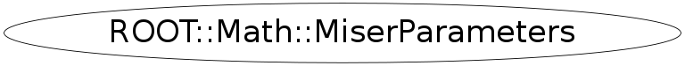

Function Members (Methods)
public:
| ~MiserParameters() | |
| ROOT::Math::MiserParameters | MiserParameters(size_t dim = 10) |
| ROOT::Math::MiserParameters | MiserParameters(const ROOT::Math::MiserParameters&) |
| ROOT::Math::MiserParameters | MiserParameters(const ROOT::Math::IOptions& opt, size_t dim = 10) |
| ROOT::Math::IOptions* | operator()() const |
| ROOT::Math::MiserParameters& | operator=(const ROOT::Math::IOptions& opt) |
| ROOT::Math::MiserParameters& | operator=(const ROOT::Math::MiserParameters&) |
| void | SetDefaultValues(size_t dim = 10) |
Class Charts
{kind=link}
{kind=link}
{kind=link}
{kind=link}

Function documentation
void SetDefaultValues()
MiserParameters(size_t dim = 10)
constructor of default parameters needs dimension since min_calls = 16 * dim
{ SetDefaultValues(dim); } MiserParameters(const ROOT::Math::IOptions& opt, size_t dim = 10)
construct from GenAlgoOptions parameter not specified are ignored
MiserParameters & operator=(const ROOT::Math::IOptions& opt)